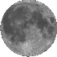

Erasmus Darwin and the Birmingham Lunar Society
Erasmus
Darwin
The Birmingham
Lunar Society
Erasmus Darwin
Erasmus Darwin (1731 to 1802, click here
for picture), the grandfather of
Charles Darwin and Francis Galton (the inventor of eugenics), was a poet,
inventor and scientist. He had ideas about evolution which almost certainly
influenced his grandsons. For example this piece on the beaks of birds, which
sounds a lot like Chuck's work on the Galapagos finches:
"Some birds
have acquired harder beaks to crack nuts, as the parrot. Others have acquired
beaks adapted to break the harder seeds, as sparrows. Others for the softer
seeds of flowers, or the buds of trees as the finches. Other birds have acquired
long beaks to penetrate the moister soils in search of roots, as woodcocks; and
others broad ones to filtrate the water of lakes, and to retain aquatic insects.
All of which seem to have been gradually produced during many generations by the
perpetual endeavour of the creatures to supply the want of food"
(Zoonomia book I)
Much of his writing was in the form of eccentric
poetry, like this from The Temple of Nature:
"Organic Life
beneath the shoreless waves
Was born and nurs'd in Ocean's pearly
caves;
First forms minute, unseen by spheric glass,
Move on the mud, or
pierce the watery mass;
These, as successive generations bloom,
New powers
acquire, and larger limbs assume;
Whence countless groups of vegetation
spring,
And breathing realms of fin, and feet, and wing.
and later
on he writes:
Cold gills aquatic form respiring lungs,
And sounds
aerial flow from slimy tongues.
(click here for an
interesting article about the real origins of the theory of
evolution)
His great grandson, Sir George Darwin is credited with the
"fission hypothesis" theory that the moon was originally part of the earth, but
Erasmus seems to have got their first:
Gnomes! how you shriek'd! when
through the troubled air
Roar'd the fierce din of elemental war;
When rose
the continents, and sunk the main,
And Earth's huge sphere exploding burst in
twain.-
Gnomes! how you gazed! when from her wounded side
Where now the
South-Sea heaves its waste of tide,
Rose on swift wheels the Moon's refulgent
car,
Circling the solar orb, a sister star,
Dimpled with vales, with
shining hills emboss'd,
And roll'd round Earth her airless realms of
frost.
NASA have found some evidence for the fission hypothesis
recently, and so the theory has been revived (sadly minus the gnomes). See the
links below for more on this. Bear in mind that there is evidence that current
theories about the moon's composition are completely wrong (click here for more on this).
[top]
The Birmingham Lunar Society
In the 1770's, Erasmus Darwin
helped to found The Birmingham Lunar Society, a social club for the great
scientists and industrialists of the day. The society met at full moon,
supposedly so that they could find their way home afterwards. Members of the
society included:
Joseph Priestley (the discoverer of oxygen), Samuel Galton
(a wealthy industrialist and quaker), William Small, The eccentrics Thomas Day
and Richard Edgeworth, Matthew
Boulton ("the creator of Birmingham"), James Watt, William
Withering, James Keir and Josiah Wedgewood.
Other people
linked to the society included: Thomas Jefferson, Benjamin Franklin, Rudolph Erich Raspe
and William Murdoch*
The Lunar
Society has been described as the think tank of the industrial revolution. They
are also often claimed to have been a masonic organisation, but I don't have any
evidence for this. A medal struck to commemorate the 200th anniversary of the
society's founding, features a single eye and the motto
"observare". [top]

*William Murdoch was the inventor of gas lighting. He ended his days
living at the court of the Shah of Persia, where he was believed to be an
incarnation of Marduk, the ancient god of light. [back]
Links to other sites on the web
Five
theories for the moon's formation
More recent article about the moon's composition"
Erasmus Darwin
Back to main page
Back to the
Utchat
Back to
the Tinners rabbits
Back to Baron Munchausen
and Transient Lunar Phenomena
Back to the liar
Back to The Man in the
Moone
Back to
Frequently asked questions
Back to Boots who
made a princess say: "Thats a story!"